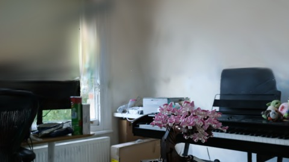
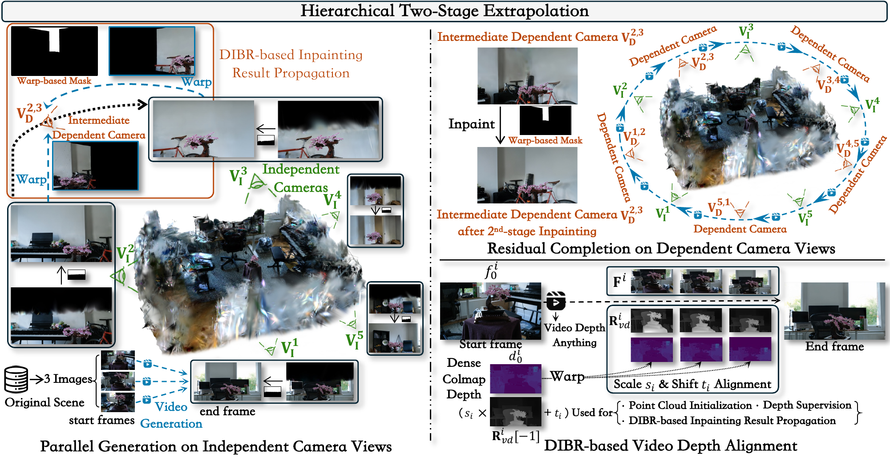
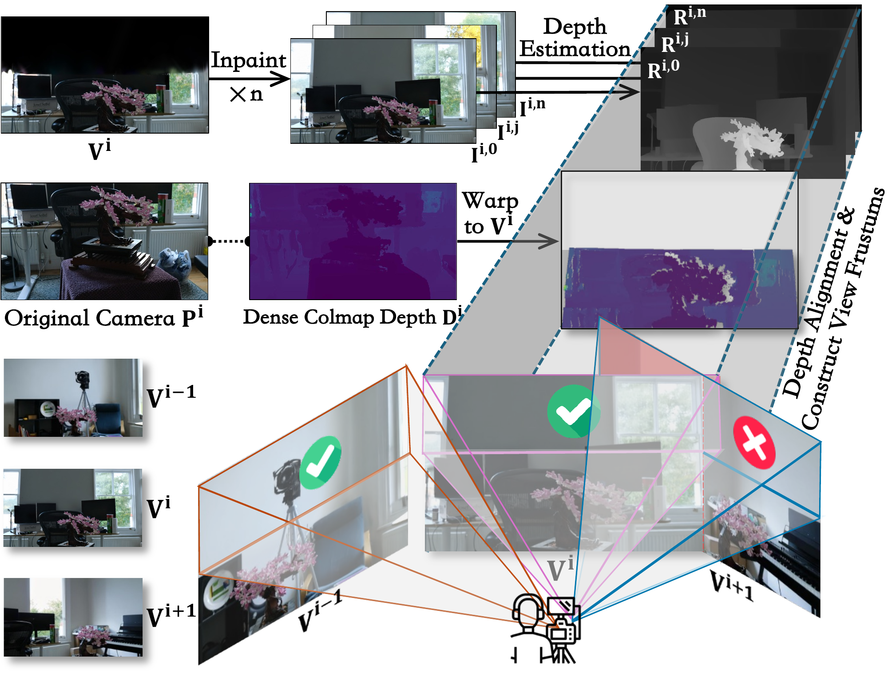
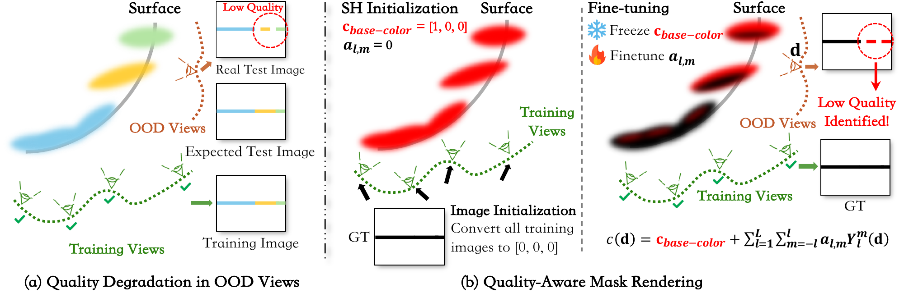
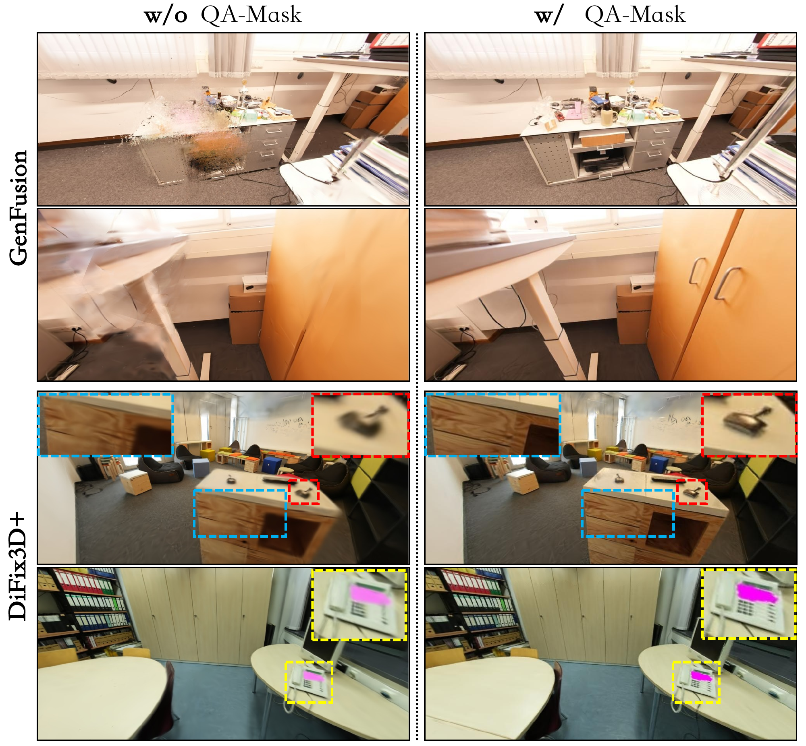

Expand in parallel
Detect independent camera views in 3D, then generate and reconstruct non-overlapping regions in a single pass.
ACM MULTIMEDIA 2026 / RIO DE JANEIRO
Scene Extrapolation via 3D Gaussian Splatting
Case Western Reserve University
† Corresponding author
THE IDEA
Novel views reveal what reconstruction leaves behind. We expand a 3D scene beyond its observed boundaries, while improving the quality of what is already visible.
Detect independent camera views in 3D, then generate and reconstruct non-overlapping regions in a single pass.
Fill the remaining regions between independent views with a second stage of residual completion.
Use Quality-Aware Masks to guide scene updates toward under-reconstructed areas and protect existing detail.
3D Gaussian Splatting achieves photorealistic reconstruction within the training view distribution, yet degrades on out-of-distribution novel views, exhibiting holes in unobserved regions and artifacts in observable areas. Recent works formulate this task as extrapolation and interpolation and try to address it with generative models, but remain limited in extrapolation scale and quality. They repeat a generate–reconstruct–shift cycle to progressively build a scene, which introduces accumulated errors with every step conditioning on previous outcomes.
In this work, we propose a holistic framework for extrapolation and interpolation. We devise an independent camera view detection mechanism to enable parallel, conflict-free extrapolation, circumventing reliance on the aforementioned error-prone cycle. Building upon this, we design a hierarchical pipeline that extrapolates independent and dependent camera views separately. Additionally, previous methods overlook inconsistency between generated and original images, compromising well-reconstructed areas. We propose a plug-and-play Quality-Aware Mask (QA-Mask) module, enabling selective utilization of generated data. By calibrating learning weights with pixel-wise rendering quality, it prevents generation-induced degradation in well-reconstructed areas. Extensive experiments demonstrate the superior performance of our framework, with QA-Mask generalizing across multiple generative reconstruction models.
SEE IT IN MOTION
Continuous camera trajectories on Mip-NeRF 360 and ScanNet++, with side-by-side baseline comparisons. The original supplementary video is silent; method names and additional render-time processing are labeled in the video.
Download videoQUALITATIVE COMPARISONS
Choose a scene, a view, and a method.
Drag the divider to compare.

GenFusionOursBonsai · Mip-NeRF 360 · View 1
Full comparison figureImages are extracted directly from the manuscript figures at their original resolution. Mip-NeRF 360 has no ground-truth images for these extrapolation views; ScanNet++ uses a controlled partial-scene reconstruction protocol.
HOW IT WORKS
A hierarchy of independent and dependent camera views reduces repeated generation cycles and the errors they accumulate.

STAGE 01
Mesh-based frustum collision detection identifies views whose inpainted regions do not overlap. Each view is inpainted independently, then connected to original training views with generated videos.
STAGE 02
Depth-based propagation carries the generated content to intermediate views. A second pass fills the remaining gaps and connects neighboring views along a closed trajectory.
FINAL REFINEMENT
Reuse the videos generated during extrapolation and incorporate artifact-removal outputs to improve rendering within the original scene. QA-Mask guides where updates should happen.

For each candidate view, inpainting and depth estimation define a probable depth range for the missing region. A mesh frustum encloses that region in 3D. Non-colliding frustums indicate independent camera views, enabling parallel generation without overlapping generated geometry.
QUALITY-AWARE MASK
Generated images can improve missing regions while unintentionally changing well-reconstructed ones. QA-Mask makes scene updates selective.

QA-Mask improves the quality of existing regions when integrated into both GenFusion and DiFix3D+, while retaining comparable extrapolation performance.
ScanNet++ results from the paper. Arrows show baseline → baseline with QA-Mask.

QUANTITATIVE EVALUATION
Perceptual quality, consistency,
and reconstruction fidelity.
| Method | PSNR ↑ | SSIM ↑ | LPIPS ↓ |
|---|---|---|---|
| Few-Shot GS | 18.92 | 0.80 | 0.3438 |
| DiFix3D+ | 20.93 | 0.84 | 0.2554 |
| GenFusion | 21.93 | 0.85 | 0.2502 |
| Guidedvd-3dgs | 22.10 | 0.84 | 0.2662 |
| Filling the Unseen Ours | 23.79 | 0.88 | 0.2300 |
Controlled evaluation: reconstruct half of each scene and extrapolate into the held-out half. Original images provide ground truth; all methods use ground-truth images as inpainting targets in this setting.
| Method | CLIP-IQA ↑ | QualiCLIP ↑ | MVC ↑ | SemSim ↑ | Time |
|---|---|---|---|---|---|
| Few-Shot GS | 0.278 | 0.352 | 1792 | 0.707 | 24 min |
| DiFix3D+ | 0.354 | 0.451 | 1755 | 0.687 | 53 min |
| GenFusion | 0.340 | 0.378 | 1157 | 0.712 | 44 min |
| Guidedvd-3dgs | 0.230 | 0.298 | 1845 | 0.691 | 306 min |
| Filling the Unseen Ours | 0.404 | 0.498 | 1972 | 0.737 | 77 min |
No ground-truth images exist for these extrapolation views. CLIP-IQA and QualiCLIP assess perceptual quality; MVC measures matching-based multi-view consistency; SemSim measures CLIP semantic similarity. Baselines receive the same inpainted independent views. Runtime is measured on an NVIDIA RTX A6000.
↑ Higher is better. ↓ Lower is better. Runtime for our method includes both extrapolation stages, interpolation, and QA-Mask training.
BIBTEX
If you find this work useful for your research, please consider citing:
@inproceedings{zhou2026filling,
title = {Filling the Unseen: Scene Extrapolation via
3D Gaussian Splatting},
author = {Zhou, Yunlai and Lu, Yiren and Liang, Tuo and
Liu, Disheng and Chaudhary, Vipin and Yin, Yu},
booktitle = {Proceedings of the 34th ACM International
Conference on Multimedia},
series = {MM '26},
year = {2026},
doi = {10.1145/3767308.3835425}
}